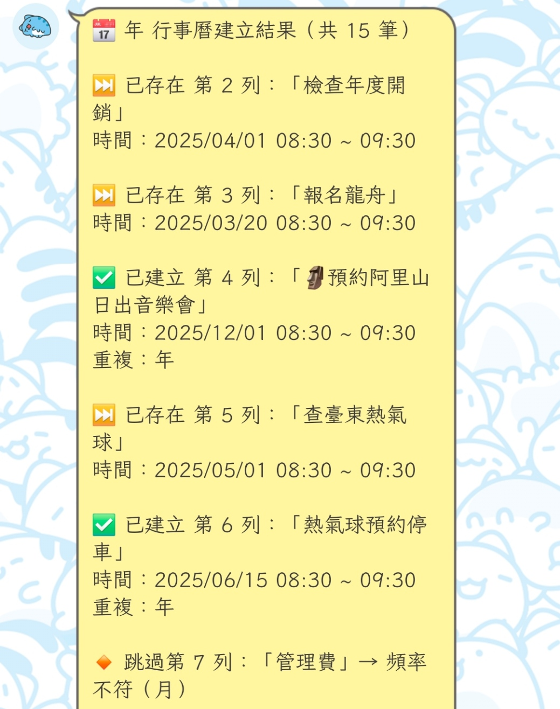
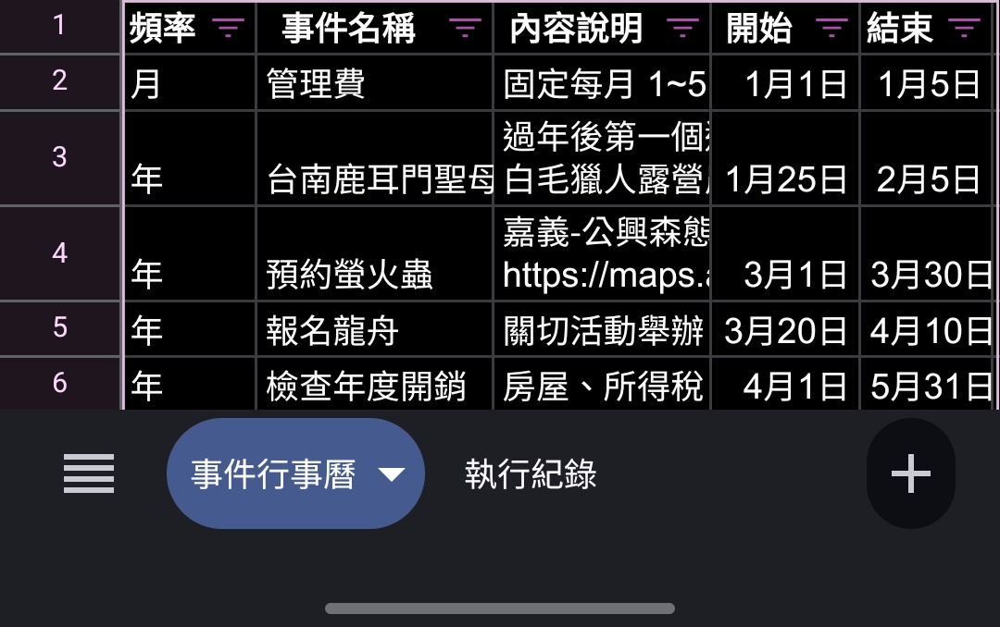

自動建立年度與每月重複事件

我常常需要記得「提早查詢端午划龍舟日期」、「預約阿里山日出音樂會」這類每年固定要做的事情。
💡 最佳解決方案
每年自動建立「4/1～5/30 的每週一到五早上 08:00–09:00」的提醒段落。這樣我每天打開行事曆就能看到這件事、卻不會太佔版面。

從 Google Sheet 讀取設定，自動建立 Google Calendar 事件：
欄位：頻率、事件名稱、內容說明、開始日期、結束日期、開始時間、結束時間、重複類型
🎯 不再遺漏重要事項
把記憶交給程式，清楚掌握每個事件的重複邏輯與建立狀態